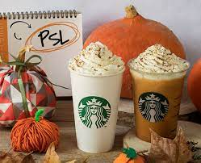
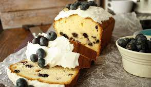
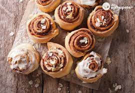

El mejor Starbucks temporada de Otono
Pumpkin caramel latte

Que es lo que puede hacer la mejor temporada del año aun mejor ?
el mejor cafe de la temporada
En cuanto nos acercamos al otoño, estas grandes hortalizas naranja se convierten en las reinas de la fiesta para preparar recetas como este café de calabaza o Pumpkin Spice Latte
El mejor acompanamiento para comenzar la epoca mas fria
Un clasico, el pan de moras tan dulce como elegante

tan solo la idea de tomar un rico cafe dulce junto con este postre es un deleite
el mejor cafe de la temporada
El clasico rollo de canella siempre sera otra de las mejores opciones

Esponjoso, dulce y frutal, tan solo de pensarlo no cabe duda que es una de las mejores opciones